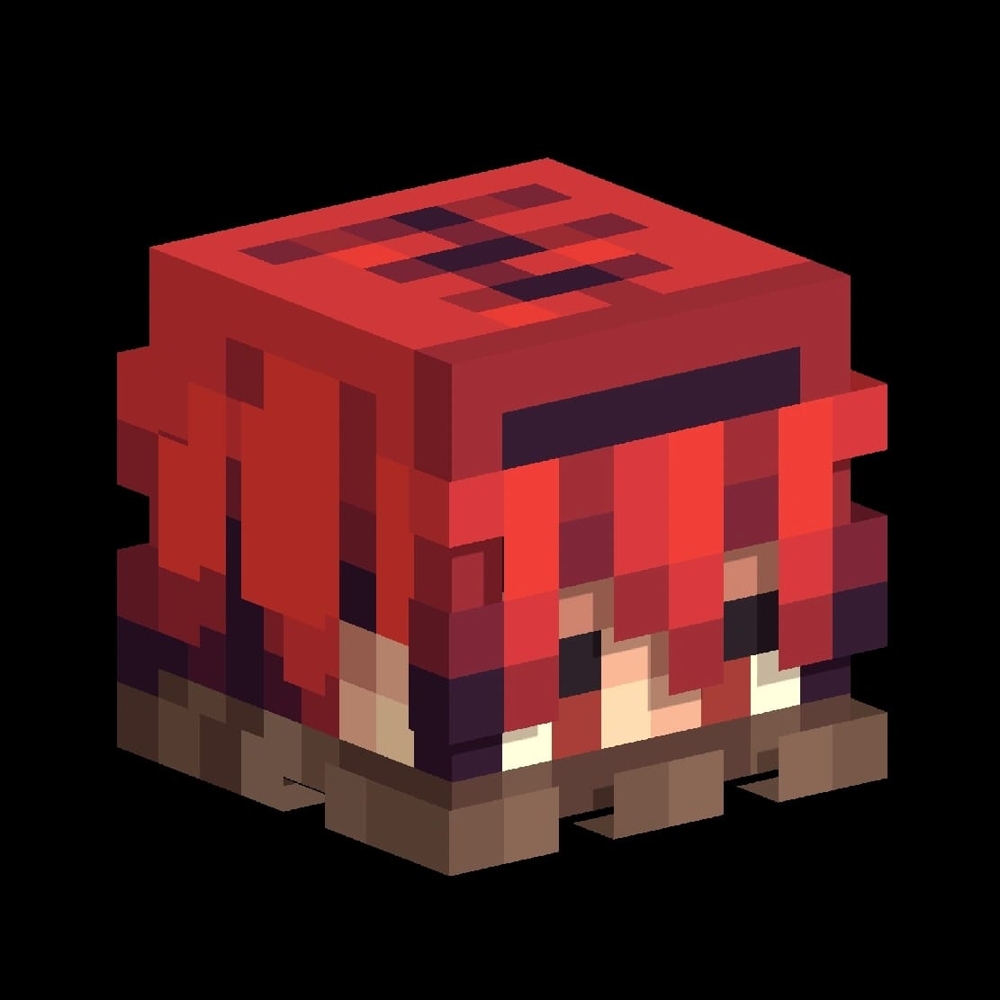
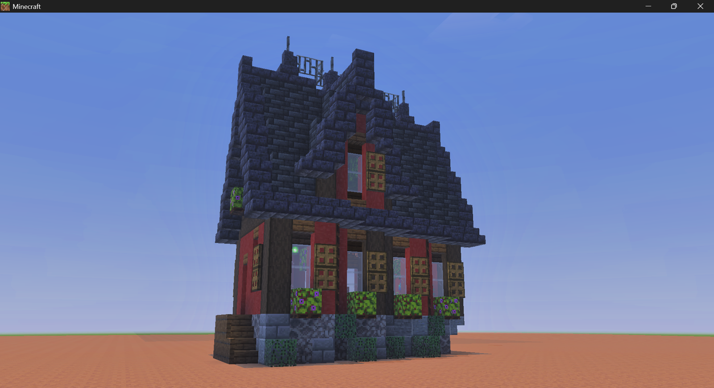
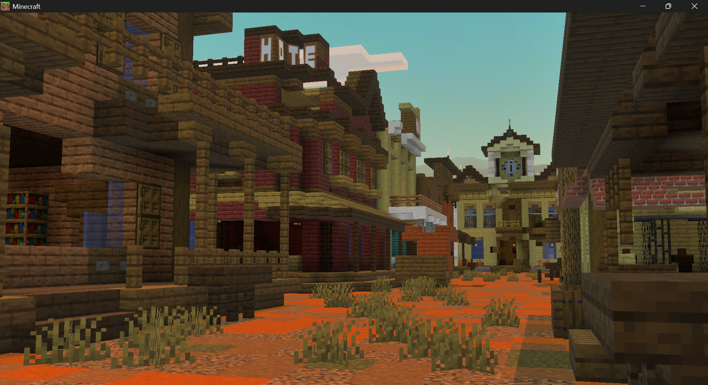
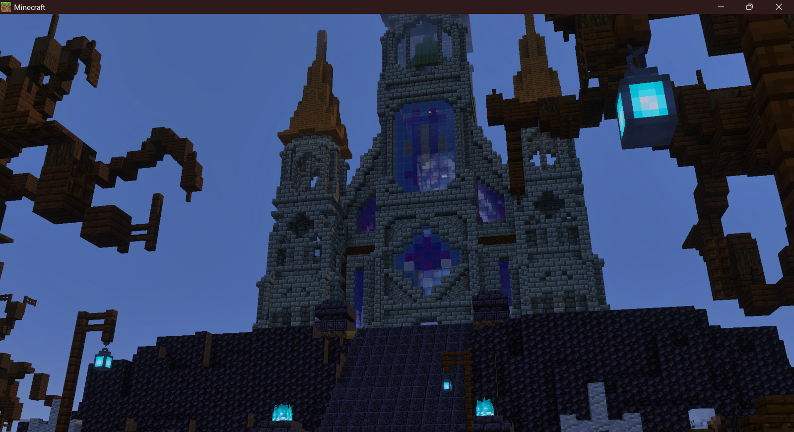
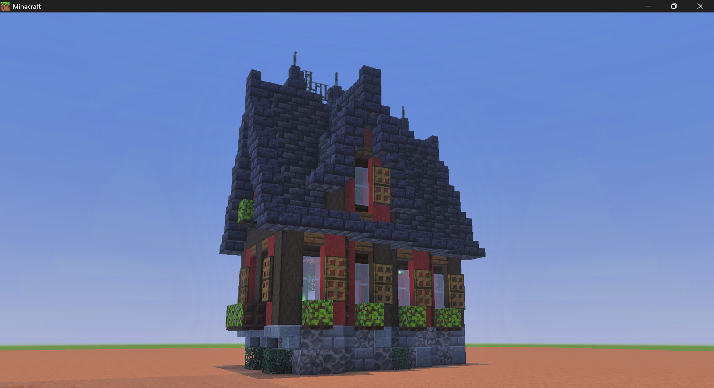
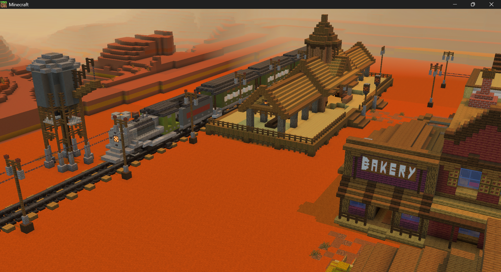
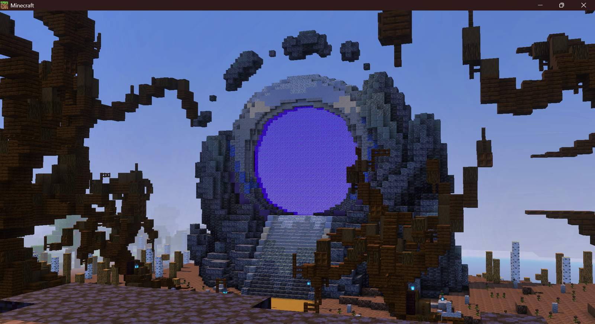

Minecraft Bedrock Builder & Simple Scripter
Butuh build Minecraft Bedrock yang rapi, aesthetic, dan siap dipakai? Lackykz Build siap bantu bikin rumah, lobby, city, fantasy build, survival area, sampai custom project sesuai request kamu.
Beberapa contoh build yang bisa jadi gambaran kualitas dan kategori order.

Build kecil dengan bentuk rapi, detail exterior, dan interior yang tetap hidup.

Area western dengan suasana cinematic, cocok untuk roleplay, server, atau adventure map.

Build fantasy besar dengan nuansa dark medieval dan detail yang lebih kompleks.

Interior kecil yang dibuat lebih nyaman dilihat supaya build tidak terasa kosong.

Area stasiun dan bangunan kota yang cocok dijadikan pusat map atau tempat spawn.

Portal besar dengan tampilan epic untuk membuat map terasa lebih premium.
Harga bisa menyesuaikan ukuran, detail, tema, dan tingkat kesulitan request.
Rumah kecil, dekorasi, interior, survival base, dan build simple detail.
Area menengah, western street, station, lobby kecil, dan beberapa bangunan.
Fantasy build, kingdom, portal besar, lobby server, dan custom project besar.
Selain jasa builder Minecraft Bedrock, tersedia juga jasa scripting sederhana untuk membantu menambahkan fitur dan pengalaman yang lebih menarik di dalam map.
Setiap build dibuat bukan cuma biar terlihat besar, tapi juga punya konsep, suasana, dan detail yang pas. Kamu bisa konsultasi dulu sebelum order supaya hasilnya sesuai kebutuhan.
Konsultasi Dulu